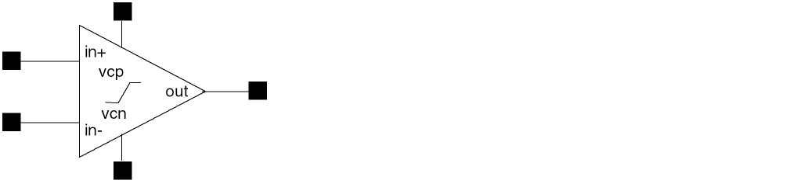
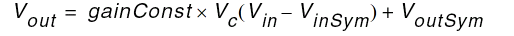
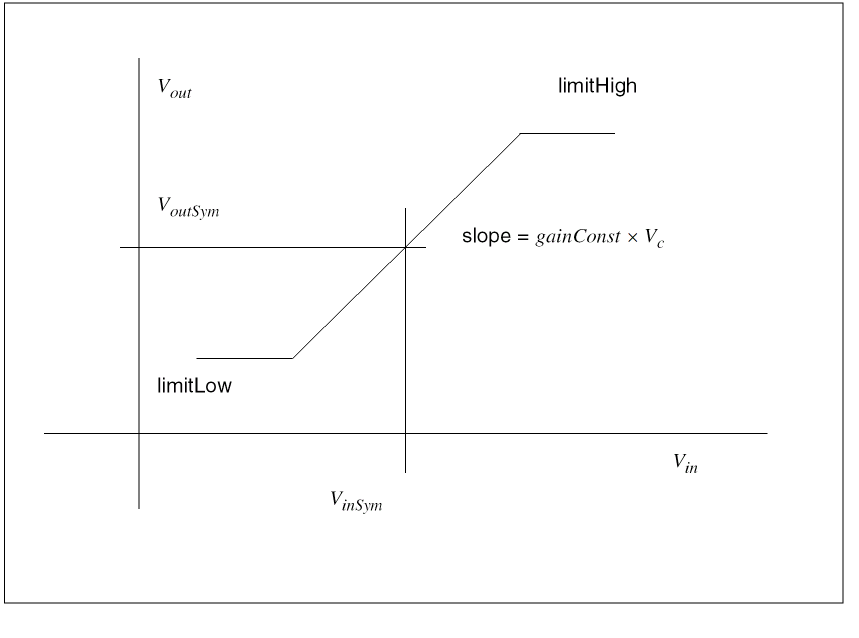

Voltage-Controlled Variable-Gain Amplifier

The following table summarizes the details of this symbol.
|
Description
|
The gain of this limiting voltage amplifier is a function of the voltage (vcp-vcn).
-
VinSym is the input voltage about which the output is symmetrical.
-
VoutSym =
(limitHigh + limitLow)/2
-
Vc is the control voltage, (vcp-vcn)
-
Vin = Vin+ - Vin-
|
|
Library name
|
variableGainAmplifier
|
|
Properties (Defaults)
|
gainConst (1)
limitHigh (10)
limitLow (-10)
VinSym (0)
|
|
Transfer function
|

If Vout
>limitHigh
then Vout = limitHigh
If Vout
<
limitLow
then Vout
= limitLow
|
|
Input impedance
|
|
|
Output impedance
|
Zero
|
|
Frequency response
|
Flat
|
The following figure shows an example of Variable Gain Amplifier Operation.

Return to top